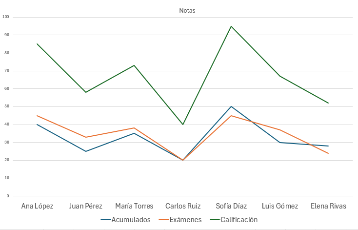

Excel: Funcionalidades Avanzadas
Ofimática I
Duodecimo A
Docente: Pablo Antonio Peña
San Pedro Sula
11 de agosto del 2025
Fórmulas Lógicas: La Función SI (IF)
La Función SI (IF) es una de las fórmulas lógicas más utilizadas en Excel. Permite realizar evaluaciones condicionales: si una condición es verdadera, realiza una acción; si es falsa, realiza otra.
- Automatiza decisiones basadas en criterios específicos.
- Es fundamental para la creación de reportes dinámicos y análisis complejos.

Estructura de la Función SI (IF)
La sintaxis básica de la función SI es simple y consta de tres argumentos:
=SI(prueba_lógica; valor_si_verdadero; valor_si_falso)
- prueba_lógica: Es la condición que se evalúa. Debe ser una expresión que resulte en VERDADERO o FALSO (ej., A1>10, B2="Activo").
- valor_si_verdadero: Es lo que la función devuelve si la prueba_lógica es VERDADERO. Puede ser un número, texto, otra fórmula o una referencia a celda.
- valor_si_falso: Es lo que la función devuelve si la prueba_lógica es FALSO. Similar al argumento anterior.

Visualización de Datos con Gráficos
Los gráficos transforman datos complejos en representaciones visuales fáciles de entender. Son esenciales para identificar tendencias, patrones y anomalías rápidamente, lo que facilita la toma de decisiones.

- Simplifican la interpretación de grandes conjuntos de datos.
- Permiten comunicar información de forma más impactante.
Tipos de Gráficos en Excel
La elección del tipo de gráfico depende del mensaje que se desea transmitir y del tipo de datos.
Gráfico de Columnas/Barras
Comparación de valores entre diferentes categorías.

Gráfico Circular (Pastel)
Muestra proporciones de un total.

Gráfico de Líneas
Tendencias de datos a lo largo del tiempo.
Gráfico de Dispersión
Relación entre dos conjuntos de valores numéricos.

Componentes Clave de un Gráfico
Conocer las partes de un gráfico facilita su creación y edición.
- Título del gráfico: Describe el propósito del gráfico.
- Ejes: Eje horizontal (categorías) y eje vertical (valores).
- Series de datos: Los datos representados visualmente (barras, líneas, etc.).
- Leyenda: Identifica qué serie de datos representa cada color o patrón.
- Etiquetas de datos: Muestran los valores exactos sobre o junto a los puntos de datos.
- Tabla de datos: Muestra los datos de origen directamente debajo del gráfico.

Tablas Dinámicas: Resumen de Datos
Una Tabla Dinámica (PivotTable) es una herramienta interactiva que permite resumir, analizar, explorar y presentar datos grandes y complejos de forma flexible.
- Permiten ver patrones y tendencias en datos que de otra forma serían difíciles de analizar.
- Son "dinámicas" porque puedes reorganizar los datos rápidamente arrastrando campos.

Pasos para Crear una Tabla Dinámica
Un proceso sencillo que transforma un rango de datos en un resumen poderoso.
- Seleccionar datos: Resalte el rango de celdas que desea analizar.
- Ir a la pestaña Insertar: En la cinta de opciones de Excel, haga clic en "Insertar".
- Seleccionar Tabla Dinámica: En el grupo "Tablas", haga clic en "Tabla Dinámica" o "Tabla Dinámica Recomendadas".
- Configurar rango y ubicación: Verifique que el rango de datos sea correcto y elija si desea la tabla en una "Nueva hoja de cálculo" o en una "Hoja de cálculo existente".
- Arrastrar campos: En el panel "Campos de tabla dinámica", arrastre los campos a las áreas de Filtros, Columnas, Filas y Valores según su análisis.